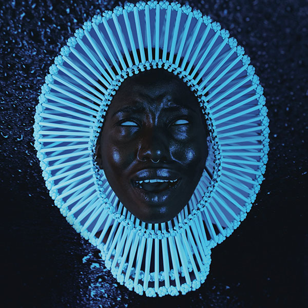

My Chocolatey Fudge Covered Fantastic Bio Page! (Part Deux)
(AKA amateur hour part deux)
Now that we've covered my taste in movies and television shows - vaguely - allow me to also cover my taste in music... Vaguely. Considering that I listen to basically everything I can get my hands on I could be sitting here listing artist until the end of time. Instead I've decided to make it easier on both of us by just listing a few of the albums/artists I've found myself listening to over the past few days. It's not as elaborate, but it'll have to do.
If you haven't heard some of these albums then feel free to follow the links listed below the artwork (It's not pretty, but at least it's somewhat functional)
- The Weeknd: Starboy
- Kanye West: Graduation
- J. Cole: 4 Your Eyez only
- Kendrick Lamar: To Pimp A Butterfly
- N*E*R*D: Seeing Sounds
- Exmag: Proportions
- Royksopp: Junior
- Sting: Ten Summoner's Tales
- Radiohead: Pablo Honey
- Zero 7: When It Falls

- Lupe Fiasco: DROGAS Light
- Childish Gambino: "Awaken, My Love!"
- Frank Ocean: Blond
- Jeremih: Late Nights: The Album
- Gorillaz: Plastic Beach
If you'd like to go back to the first page for whatever reason then you can do so by clicking the link found
here!